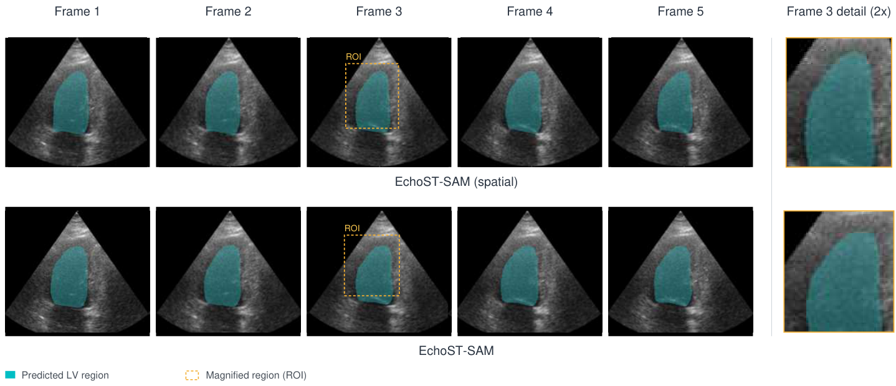
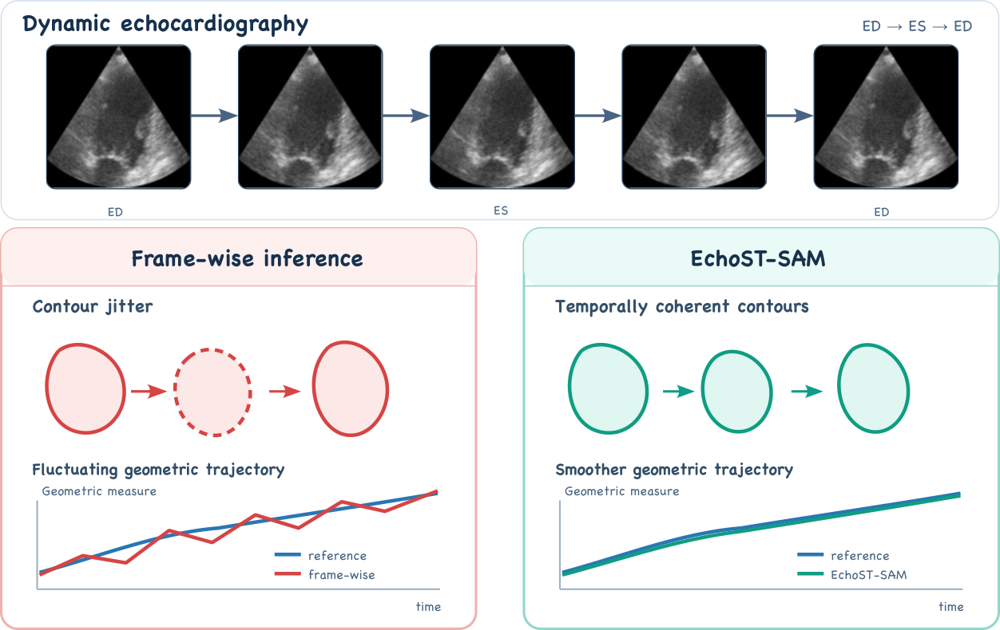
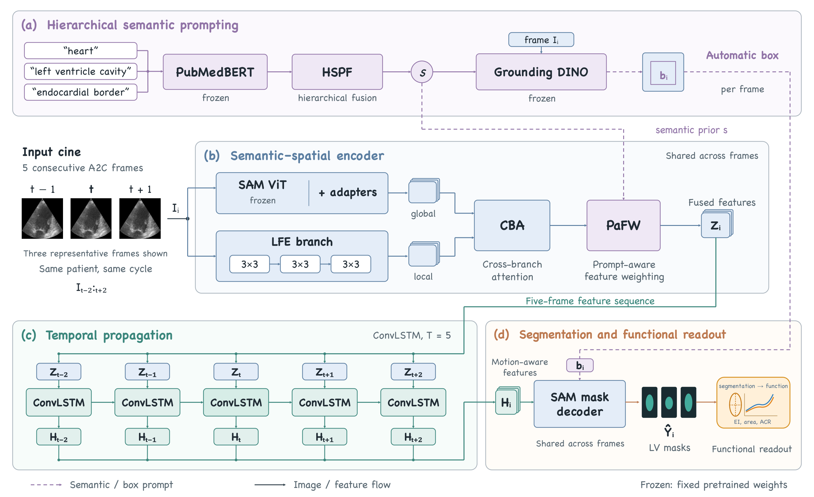
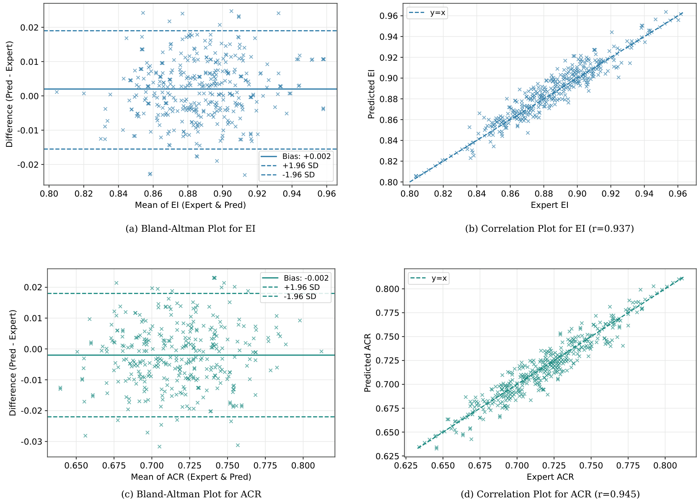

IVCNZ 2026
EchoST-SAM:Semantic-Prompted Spatiotemporal LV Segmentation for Functional Analysis in Echocardiography
1 School of Artificial Intelligence, Shenzhen Technology University
2 Department of Mechanical and Mechatronics Engineering, University of Auckland
3 School of Applied Technology, Shenzhen University
* Corresponding author: lvyu@sztu.edu.cn
From independent frames to temporally coherent LV contours.
Anatomical prompts, global–local features, and temporal memory bring SAM to full-cycle echocardiographic segmentation.


- Segmentation Dice
- 93.90%
- CAMUS A2C
- Temporal consistency
- 0.956
- +0.035 vs. spatial variant
- Cavity-area change error
- −9.9%
- Relative ACR MAE reduction vs. spatial
Overview
A good contour in one frame is only part of the story.
Speckle noise, weak endocardial boundaries, and signal dropout make left-ventricular (LV) segmentation difficult. Processing each frame independently can introduce contour jitter across a cardiac cycle, affecting measurements derived from time-varying geometry.
EchoST-SAM is an interaction-free framework that combines an adapted SAM encoder with local ultrasound features, fixed anatomical text prompts, automatic box generation, and ConvLSTM temporal propagation. It predicts LV masks across consecutive frames and derives two transparent geometric readouts: ellipse eccentricity (EI) and fractional cavity-area change (ACR).
The main finding. On CAMUS A2C, temporal propagation improves the reported temporal consistency and lowers EI/ACR measurement errors, with a small frame-level overlap trade-off: Dice changes from 93.97% to 93.90%.
Why temporal consistency matters


Method
Anatomical guidance meets spatial detail and temporal memory.


- 01
Guide with anatomy
Frozen PubMedBERT encodes “heart”, “left ventricle cavity”, and “endocardial border”. HSPF mean-pools and projects these embeddings into a shared semantic prior. Grounding DINO generates an automatic box for each frame.
- 02
Combine global and local
A frozen SAM ViT with trainable adapters captures global context. The local feature-enhancement branch captures ultrasound boundary detail. Cross-branch attention and prompt-aware feature weighting fuse the two.
- 03
Propagate through time
ConvLSTM processes five-frame clips in chronological order. The adapted SAM decoder combines temporal features and box embeddings to predict LV masks, from which EI and ACR are computed.
Training and implementation details
Input: 256 × 256 A2C frames; five-frame clips. Recurrent hidden and memory states are reset for each clip.
Frozen: SAM ViT, PubMedBERT, Grounding DINO, and the SAM prompt encoder. Trainable: adapters, LFE, HSPF, PaFW, ConvLSTM, and the mask decoder.
Optimization: binary cross-entropy + Dice loss + 0.1 × PaFW entropy. Adam, initial learning rate 0.01, weight decay 10−4, batch size 16, 200 epochs; learning rate multiplied by 0.1 every 50 epochs. Training uses an NVIDIA RTX 4090.
Results on CAMUS A2C
We evaluate 500 patients using a study-specific, patient-disjoint 400 / 50 / 50 train / validation / test split. Official end-diastolic (ED) and end-systolic (ES) masks are supplemented with quality-checked, clinician-provided intermediate-frame LV annotations. All compared methods use the same data, resolution, and split.
| Method | Dice (%) ↑ | HD (px) ↓ | EI MAE ↓ | ACR MAE ↓ |
|---|---|---|---|---|
| U-Net | 93.56 | 9.90 | 0.0167 | 0.082 |
| Swin-Unet | 91.88 | 13.11 | 0.0192 | 0.087 |
| MISSFormer | 93.25 | 9.94 | 0.0163 | 0.084 |
| TransUNet | 93.60 | 9.60 | 0.0155 | 0.080 |
| AAU-Net | 93.59 | 9.13 | 0.0160 | 0.078 |
| H2Former | 93.44 | 9.60 | 0.0153 | 0.077 |
| MedSAM | 87.52 | 15.28 | 0.0239 | 0.091 |
| SAMed | 87.67 | 13.24 | 0.0242 | 0.094 |
| SAMUS | 91.13 | 11.76 | 0.0172 | 0.079 |
| CC-SAM | 92.85 | 10.88 | 0.0150 | 0.074 |
| EchoST-SAM (spatial) | 93.97 | 9.05 | 0.0142 | 0.071 |
| EchoST-SAM | 93.90 | 9.11 | 0.0131 | 0.064 |
↑ Higher is better. ↓ Lower is better. Bold denotes the best reported value in each column. HD is the symmetric maximum Hausdorff distance in pixels, not HD95. MAE: mean absolute error.
What does temporal propagation change?
Full model vs. its frame-wise spatial variant
- Temporal consistency
- 0.921 → 0.956
- EI error
- 0.0142 → 0.0131
- ACR error
- 0.071 → 0.064
- Frame-level Dice
- 93.97% → 93.90%
Temporal consistency (TC) averages adjacent predicted-mask Dice. It measures smoothness and may also reward over-smoothing; it does not directly measure fidelity to cardiac motion.
Temporal window ablation
Five frames provide the default validation-selected setting. Extending the window to seven adds only 0.001 TC while further lowering Dice and increasing HD.
| Window length | Dice (%) ↑ | HD (px) ↓ | TC ↑ |
|---|---|---|---|
| 1 frame (spatial) | 93.97 | 9.05 | 0.921 |
| 3 frames | 93.84 | 9.28 | 0.944 |
| 5 frames (default) | 93.90 | 9.11 | 0.956 |
| 7 frames | 93.76 | 9.33 | 0.957 |
From masks to geometric readouts
Ellipse eccentricity · EI
Describes the fitted cavity shape using its major and minor axes.
EI = √(1 − (Lmin / Lmax)2)
Fractional cavity-area change · ACR
Describes the relative change in A2C cavity area between ED and ES.
ACR = (AED − AES) / AED


Scope of the evidence
Geometric measurements use reference ED/ES frame indices to isolate segmentation-derived errors. ACR is a two-dimensional area-change surrogate, not biplane left-ventricular ejection fraction. The results are single-run and descriptive; automatic phase selection, comparison with temporal baselines, uncertainty assessment, and external validation remain future work.
Resources
Citation
@inproceedings{lu2026echostsam,
title = {{EchoST-SAM}: Semantic-Prompted Spatiotemporal
{LV} Segmentation for Functional Analysis
in Echocardiography},
author = {Lu, Yu and Deng, Xiaokang and Zhang, Wei
and Huang, Bingding},
booktitle = {International Conference on Image and Vision
Computing New Zealand (IVCNZ)},
year = {2026},
url = {https://lvyupku.github.io/EchoST-SAM/}
}Accepted at IVCNZ 2026. Proceedings page numbers and DOI will be added when available.
Acknowledgments
This research was supported by the National Natural Science Foundation of China (62576222, 62266039), the Department of Education of Guangdong Province (2023ZDZX2055), the Shenzhen Medical Research Fund (D250402003), and the Shenzhen Science and Technology Program (KJZD20240903095605007, JCYJ20250604145033042). Additional support was provided in part by the China Scholarship Council.